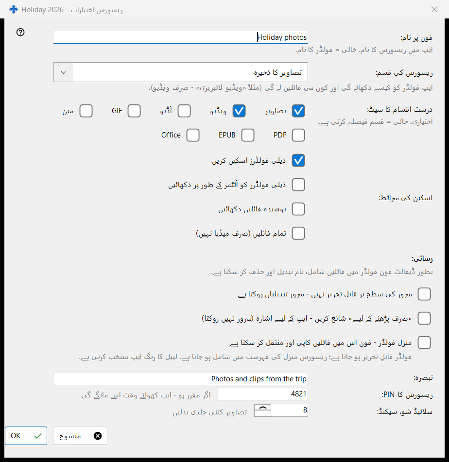
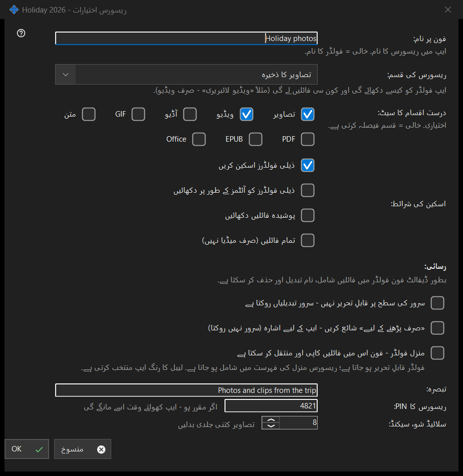

ریسورس اختیارات
یہ کس مقصد کے لیے ہے
ایک شیئر کیے گئے فولڈر کے اختیارات: فون پر اس کا نام، قسم، کون سی فائلیں دکھائی جائیں، کون انہیں بدل سکتا ہے اور کچھ اضافی چیزیں۔ یہ مرکزی ونڈو میں ترمیم سے، فولڈر کی قطار سے اور وسائل کے وزرڈ سے کھلتا ہے۔ اصل عنوان فولڈر کے نام پر ختم ہوتا ہے۔


اس ترتیب میں
- وہ نام طے کریں جو فون دکھائے گا۔
- وسیلے کی قسم یا درست میڈیا سیٹ چنیں۔
- اسکین کی شرائط طے کریں۔
- رسائی چنیں۔
- تبصرہ، PIN اور سلائیڈ شو کے وقفے کے لیے اضافی اختیارات کھولیں۔
- ٹھیک دبائیں۔
عناصر
نام اور قسم
فون پر نام: ایپ میں فولڈر کا نام ہے؛ خالی کا مطلب فولڈر کا اپنا نام۔ ریسورس کی قسم: میں عام فولڈر، آڈیو لائبریری، ویڈیو لائبریری، تصاویر کا ذخیرہ اور دستاویزات ملتے ہیں۔ درست اقسام کا سیٹ: عین اقسام چنتا ہے (تصاویر، ویڈیو، آڈیو، متن، تمام فائلیں)؛ خالی کا مطلب ہے کہ قسم فیصلہ کرتی ہے۔
اسکین کی شرائط
ذیلی فولڈرز اسکین کرنا، ذیلی فولڈرز کو آئٹمز کے طور پر دکھانا، پوشیدہ فائلیں دکھانا اور تمام فائلیں دکھانا، صرف میڈیا نہیں۔
رسائی
طے شدہ طور پر فون فولڈر میں فائلیں شامل کر سکتا ہے، ان کا نام بدل سکتا ہے اور انہیں حذف کر سکتا ہے۔ صرف پڑھنے کے لیے حقیقی تالا ہے: سرور تبدیلیاں مسترد کرتا ہے۔ صرف پڑھنے کا اشارہ ایپ سے محض ترمیم کے بٹن چھپواتا ہے؛ سرور کچھ نہیں روکتا۔ منزل فولڈر فون سے کاپی اور منتقل کی گئی فائلیں لے سکتا ہے؛ وہ قابلِ تحریر ہو جاتا ہے اور وصول کنندگان کی فہرست میں آ جاتا ہے، اور اس کا رنگ ایپ چنتی ہے۔
اضافی اختیارات
ایک تبصرہ (اختیاری)، وسیلے کے لیے PIN (وسیلہ کھولتے وقت ایپ اسے مانگتی ہے) اور سیکنڈ میں سلائیڈ شو کا وقفہ۔ تصدیق کرنے پر ترتیبات سرور کو بھیجی جاتی ہیں۔
مینیجر کی ترتیبات · SFTP اشتراک کی ترتیبات · ایکسچینج سرور کی ترتیبات